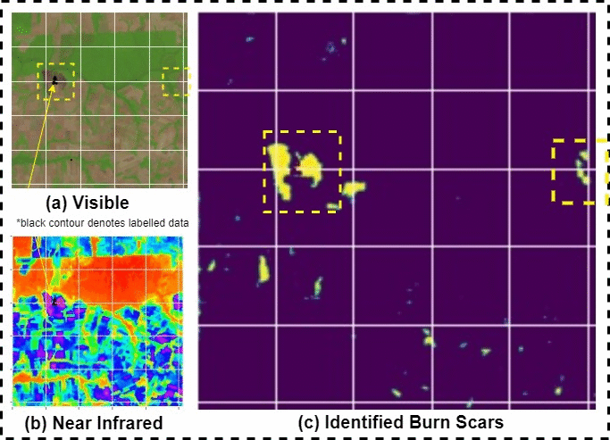
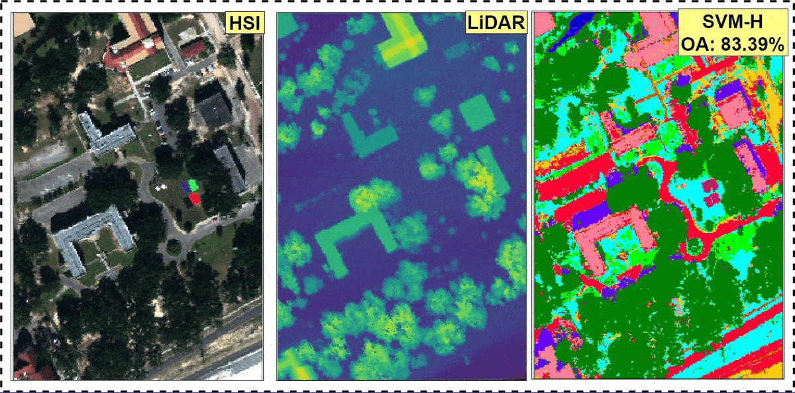
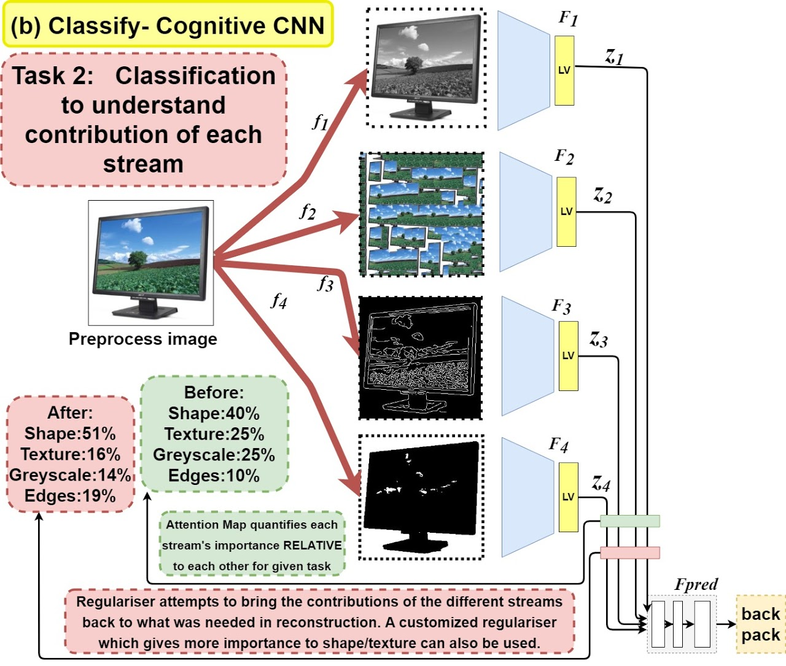
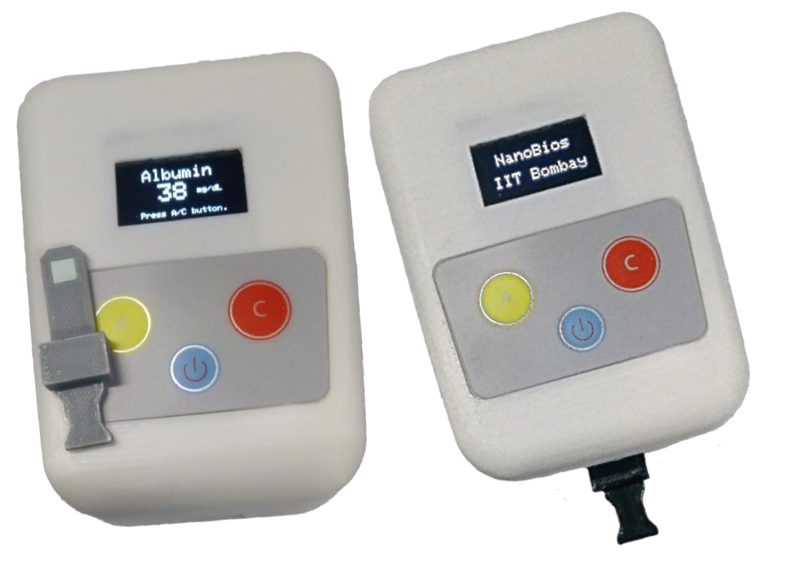
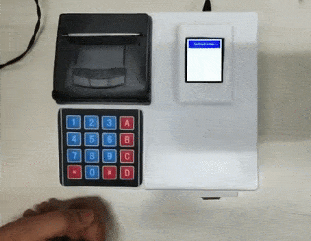
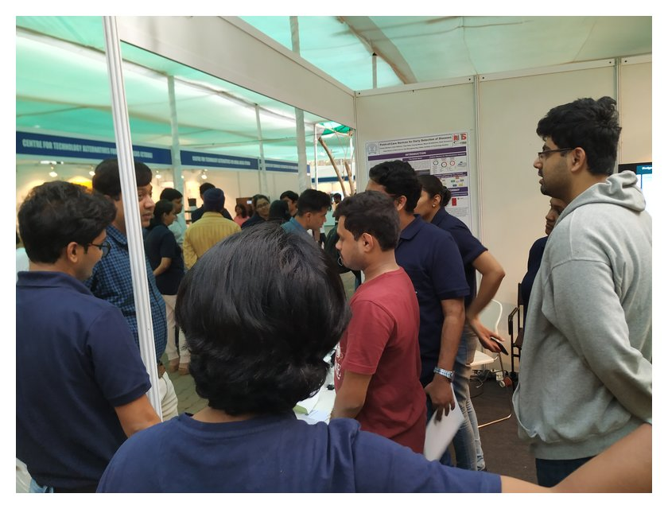

Satyam Mohla
सत्यम मोहला
सत्यम मोहला

Electrical Engineering
IIT Bombay
IIT Bombay
PROJECTS
Green is the new Black: Multimodal Noisy Segmentation based fragmented burn scars identification in Amazon
Jan 2020 - Present
Detection of burn marks due to wildfires in inaccessible rain forests is important for various disaster management and ecological studies. Diverse cropping patterns and the fragmented nature of arable landscapes amidst similar looking land patterns often thwart the precise mapping of burn scars. Recent advances in remote-sensing and availability of multimodal data offer a viable time-sensitive solution to classical methods, which often requires human expert intervention. In this work, we utilised a partially/mis-labelled dataset representing burn patterns in Amazon rainforest to propose AmazonNET - a U-net based segmentation network to correctly identify burn scars & reject incorrect labels, demonstrating our approach as one of the first to effectively utilise deep learning based segmentation models in multimodal burn scar identification.

Additional Information: Webpage / Paper / Blog / bibtex
Cross-Attention is what you need: Multimodal Fusion Network for robust Classification in Remote sensing
May 2019 - Present
With recent advances in sensing, multimodal data is becoming easily available for various applications, especially in remote sensing (RS), where many data types like multispectral (MSI), hyperspectral (HSI), LiDAR etc. are available. Effective fusion of these multisource datasets is becoming important, for these multimodality features have been shown to generate highly accurate land-cover maps. However, fusion in the context of RS is non-trivial considering the redundancy involved in the data and the large domain differences among multiple modalities. In addition, the feature extraction modules for different modalities hardly interact among themselves, which further limits their semantic relatedness. As a remedy, we propose a feature fusion and extraction framework, namely FusAtNet, for collective land-cover classification of HSIs and LiDAR data in this paper. The proposed framework effectively utilizses HSI modality to generate an attention map using "self-attention" mechanism that highlights its own spectral features. Similarly, a "cross-attention" approach is simultaneously used to harness the LiDAR derived attention map that accentuates the spatial features of HSI. These attentive spectral and spatial representations are then explored further along with the original data to obtain modality-specific feature embeddings. The modality oriented joint spectro-spatial information thus obtained, is subsequently utilized to carry out the land-cover classification task. Experimental evaluations on three HSI-LiDAR datasets show that the proposed method achieves the state-of-the-art classification performance, including on the largest HSI-LiDAR dataset available, Houston, opening new avenues in multimodality feature fusion classification.

Additional Information: Webpage / Paper / Blog / bibtex
Mimicking Human Cognitive Models to resolve Texture-Shape Bias
May 2019 - Present
Recent works demonstrate the texture bias in Convolutional Neural Networks (CNNs), conflicting with early works claiming that networks identify objects using shape. It is commonly believed that the cost function forces the network to take a greedy route to increase accuracy using texture, failing to explore any global statistics. We propose a novel intuitive architecture, namely CognitiveCNN, inspired from feature integration theory in psychology to utilise human-interpretable feature like shape, texture, edges etc. to reconstruct, and classify the image. We define two metrics, namely TIC and RIC to quantify the importance of each stream using attention maps. We introduce a regulariser which ensures that the contribution of each feature is same for any task, as it is for reconstruction; and perform experiments to show the resulting boost in accuracy and robustness besides imparting explainability. Lastly, we adapt these ideas to conventional CNNs and propose Augmented Cognitive CNN to achieve superior performance in recognition.

Additional Information: Webpage / Paper / bibtex
Design and Development of Point of Care Test and Optical Reader for Early Screening of Kidney Related Disorder
Dec 2018-Present
Low-cost, paper-based colorimetric assays for early screening of albumin, creatinine and their ratio are developed. The developed methods are non-invasive and require only 10 μl of the urine sample. A reflectance-based optical reader is also developed for the quantification of the albumin and creatinine. The developed method is based on spot-urine testing, which is advantageous when compared to the conventional 24-hr urine collection. The detection range of albumin and creatinine assays is 10–150 mg/dL and 25–400 mg/dL, respectively. The developed assays and optical reader were tested with the chronic kidney diseased patient's samples at KEM Hospital, Mumbai.

Additional Information: Webpage / Paper / bibtex
Design and Development of Quantum Dots Infused Films and an Optical Reader for Measurement of Blood Electrolytes
Dec 2018-Present
pH-sensitive, quantum dots (QDs) based sensor films were developed for point-of-care diagnosis and monitoring of plasma sodium and potassium concentrations. MPA capped CdTe QDs are synthesized using the hydrothermal process. The emission wavelength of the synthesized QDs is programmed at 635 nm. Characterization of QDs was done using transmission electron microscopy 200KV (TEM), X-ray diffraction (XRD), fluorescence spectroscopy, which indicated the excellent photostability of the developed QDs. Chromoionophore-I, II, Potassium ionophore, Sodium ionophore, cation exchanger, QDs, PVC and tetrahydrofuran (THF) were used to developed sodium and potassium sensor films. The sensor films exhibit good fluorescence in the presence of plasma sodium or potassium ions. The fluorescence intensity is directly proportional to the concentration of sodium or potassium ions present in the plasma. An optical reader is also developed for the quantification of the fluorescence intensity of the sodium and potassium sensor films.

Additional Information: Paper / bibtex
IIT Bombay Mars Rover Team: Division Head, Research and Biosciences
Sept 2016 - Aug 2018
The IITB Mars Rover project is a student initiative at IIT Bombay to build a prototype Mars rover capable of performing extra-terrestrial robotics and carrying out scientific experiments, participating in the University Rover Challenge at the Mars Society’s Mars Desert Research Station, Utah. I served as the division head of Biosciences & Research, responsible for the instumentation and biosensing stack on the rover and performing autonomous sample collection and onboard scientific experimentation. I often coordinate with Electical Division for ROS integration, and with Mechanical division to work on sample collection. Biosciences consists of Bioassembly, Astrobiology, Geosciences and Research sub-divisions. As such I am also responsible for developing and acquiring novel research tools, like adapting an pocket-size NIR micro-spectrophotometer called Scio to our onboard rover sensing stack.

Additional Information: 2018 Promo Video / 2017 Promo Video / Poster
Co-Founder, TechForSociety, Social Initiative
Nov 2017 - Present
TechForSociety is a social project started with an aim to utilize the young engineers of tomorrow in premier technical institutes like IITs to cater to the technology needs of rural areas. We aim to develop grassroots understanding to work on fundamental social issues and design low cost technology interventions and solutions to solve various problems faced by society today. We have been active for more than two years and have developed many prototypes for water accessibility & water management problems in villages. We have advised various NGOs at grassroots level on technical issues & already created huge impact in those areas, and won various grants and awards.